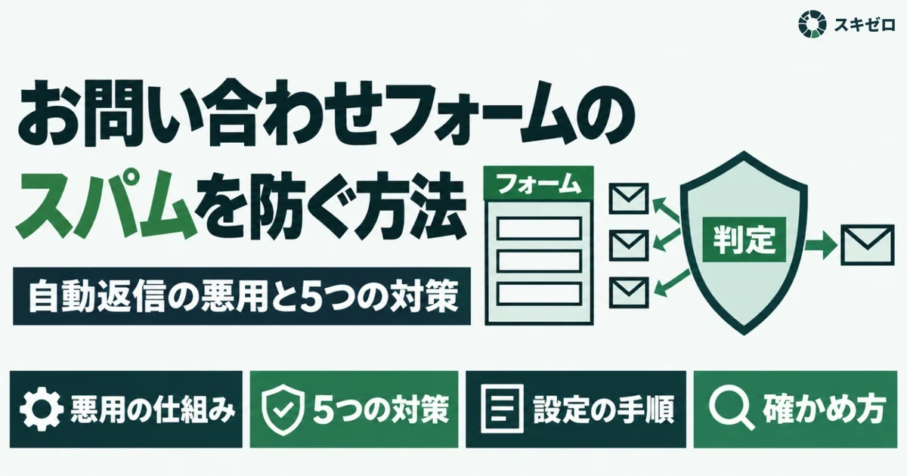
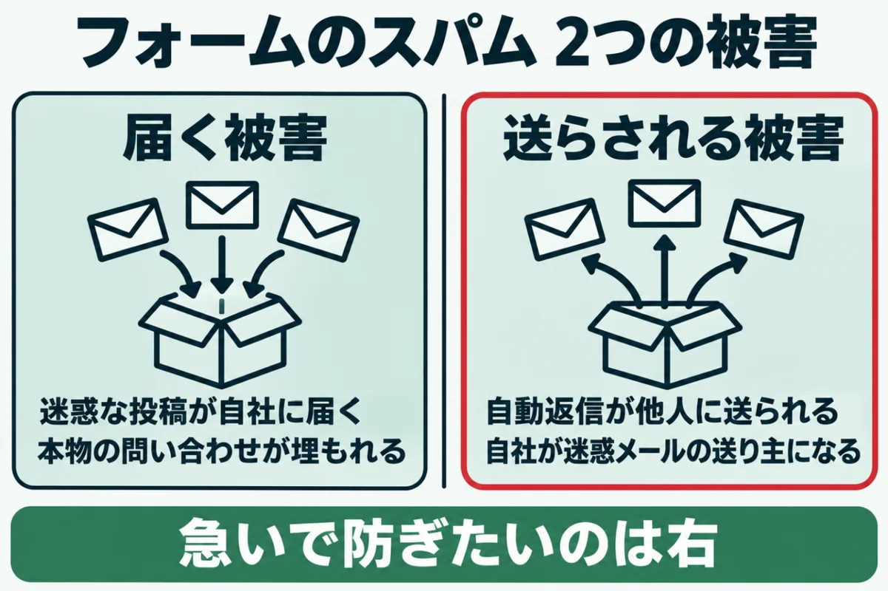
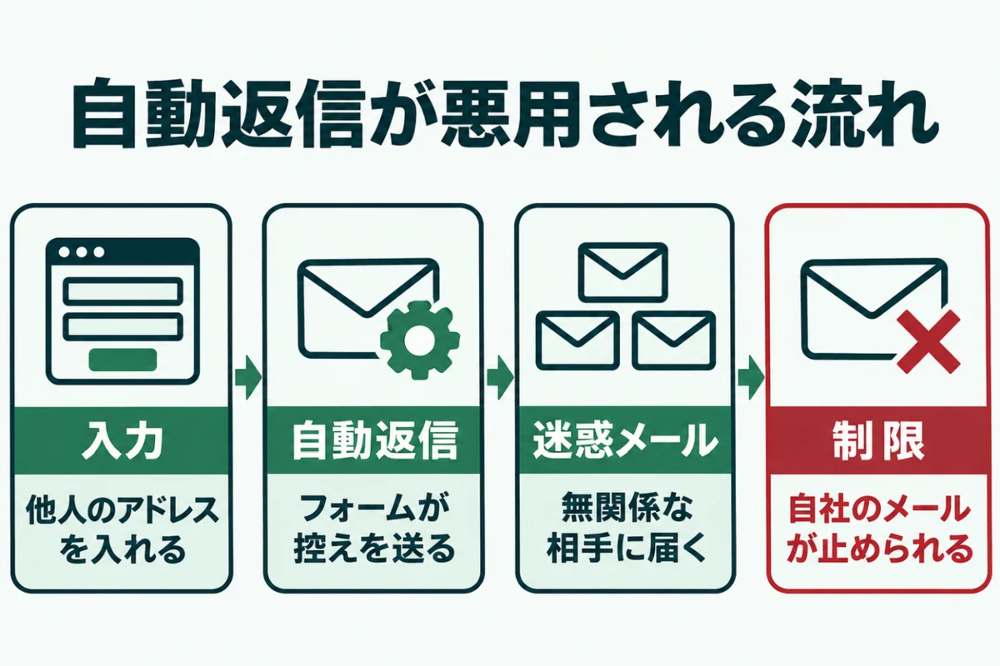
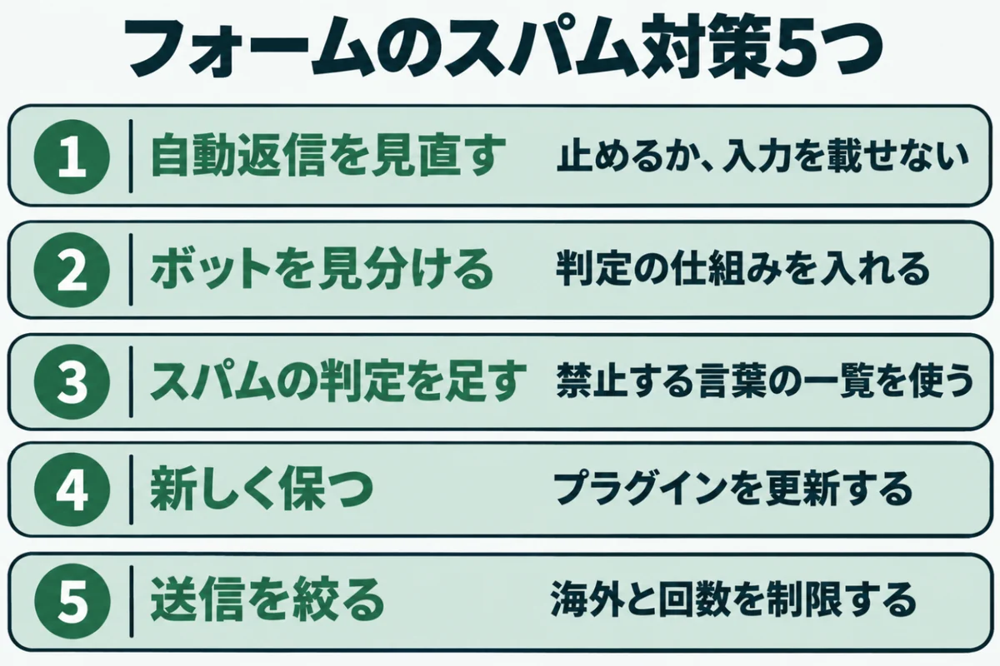
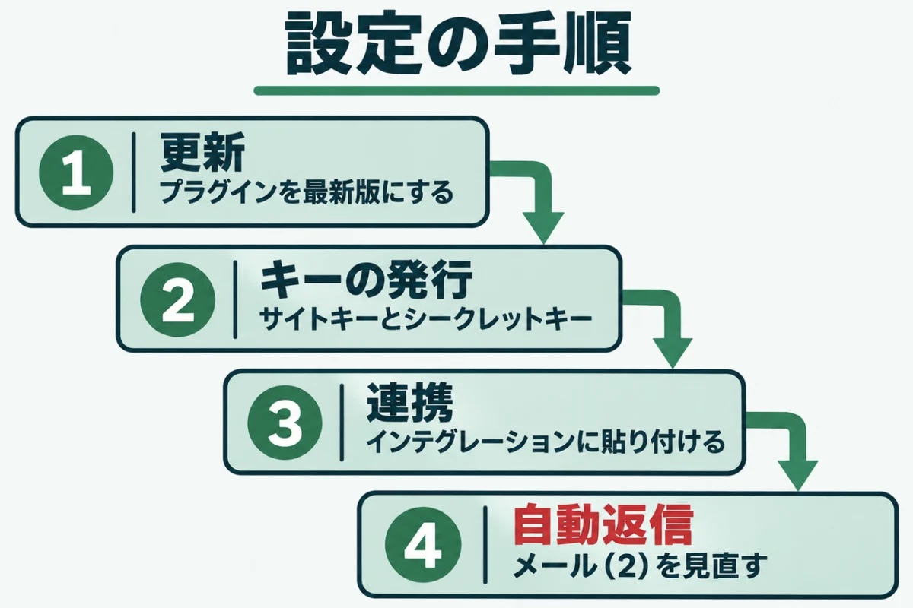
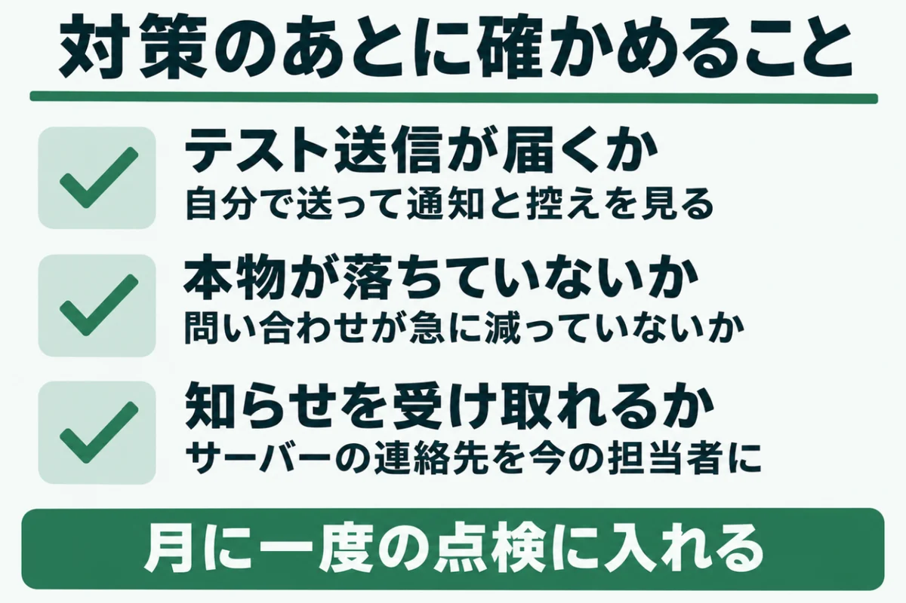

お問い合わせフォームがスパムに使われるのを防ぐ方法自動返信の悪用と5つの対策

「お問い合わせフォームから、英語の営業文や意味の分からない投稿が毎日届く」と困っていませんか？
迷惑な投稿が届くだけなら、被害はまだ軽いほうでしょう。フォームの作りによっては、自社のサイトが迷惑メールの踏み台にされるのです。
この記事では、お問い合わせフォームがスパムに使われるのを防ぐ方法を紹介します。悪用の仕組み、5つの対策、設定の手順、確かめ方の順にまとめました。
IPAとサーバー各社の注意喚起、フォームの公式の説明をもとにしています。自社のフォームに当てはまる点がないか、読みながら確かめてください。
お問い合わせフォームのスパムとは？対策の前に知りたい被害の形

お問い合わせフォームのスパムには、届く被害と送らされる被害の2つがあります。対策を選ぶ前に、自社のフォームでどちらが起きているかを見分けましょう。
どちらも、人ではなくプログラムが自動で送ってくるものが大半です。エックスサーバーも、不正なアクセスの大半はロボットによるものと説明しています。会社の規模や知名度は関係がありません。
自社に届くスパム
一つ目は、フォームを通じて自社に届く迷惑な投稿です。海外からの英語の宣伝、怪しいURLの入った文、同じ内容の繰り返しなどが届きます。件数が増えると、本物の問い合わせがその中に埋もれてしまうでしょう。返信の遅れや見落としが、機会の損失につながります。本文のURLを開いてしまう危険も見逃せません。届いた投稿のURLは、開かずに削除するのが基本です。こちらは不便ではあるものの、被害は自社の中にとどまります。
他人に送らされるスパム
二つ目は、自社のフォームが迷惑メールの送信に使われる形です。送信した人に控えのメールを返す、自動返信の機能が狙われます。攻撃者は、メールアドレスの欄に他人のアドレスを入れて送信するのです。すると、自社の名前で、無関係な人へメールが届きます。受け取った人から見れば、送り主は自社のサーバーです。気づかないうちに、迷惑メールを送る側になってしまいます。こちらは社外に被害が出るため、急いで対策する必要があるでしょう。
お問い合わせフォームの自動返信を悪用するスパムと対策が要る理由

お問い合わせフォームの自動返信の悪用は、サーバー各社が注意を呼びかけている手口です。エックスサーバーは、2025年1月ごろから事例が急増したと知らせました。ロリポップも、同じ年の3月に注意喚起を出しています。
自動返信を付けたまま何年も見直していないフォームは、一度確かめてください。仕組みを知っておくと、どこを直せばよいかが分かります。
他人のアドレスを入れて自動返信を送らせる
手口はとても単純なものです。IPAが2020年に紹介した事例では、氏名の欄に不正なサイトのURLが入力されていました。メールアドレスの欄には、不特定多数のアドレスが入れられています。フォームは氏名をそのまま自動返信に載せる作りだったため、URL入りのメールが送られました。不正なメールは10万件以上にのぼったと報告されています。特別な弱点を突かれたわけではなく、フォームの機能がそのまま使われた点が厄介です。
放置すると自社のメールが届かなくなる
被害は、迷惑をかけた相手だけでは終わりません。IPAの事例では、メールサーバーが公開のブロックリストに登録されました。その結果、正規の業務メールの送信にまで支障が出たのです。相手の組織によっては、メールが届かなくなりました。契約しているサーバー会社から制限を受けることもあるでしょう。ロリポップは、不正な利用を検知した場合にフォームの非表示やアカウントの停止を行うとしています。さくらインターネットも、検知したフォームを非公開にする対応を案内しました。
- 参考：【注意喚起】お問い合わせフォームの自動返信を悪用したスパム配信にご注意ください｜ロリポップ！レンタルサーバー
- 参考：コメントスパム（フォーム悪用）が確認された場合の対応と復旧手順｜さくらのサポート情報
自作のフォームは書き換えにも注意
フォームを自社や制作会社が独自に作っている場合は、もう一つ注意点があります。入力された内容がメールの宛先や件名の部分に入り込む、メールヘッダ・インジェクションという弱点です。IPAは、迷惑メールの送信に悪用されるおそれがあると説明しています。対策として、宛先や件名を固定の値にし、入力は本文にだけ出す作りが挙げられました。言語に用意されたメール送信の仕組みを使うことも勧めています。古い独自のフォームは、制作会社に確かめてもらいましょう。
お問い合わせフォームのスパム対策5つ

お問い合わせフォームのスパム対策は、1つで防ぎきるものではありません。いくつかを重ねて、送りにくく、送られても広がらない形にします。
効果が大きく、すぐできるものから順に並べました。順番は、手を付けやすさと効果の大きさで決めています。全部を一度にやる必要はありません。上から順に、自社のフォームでできるものを進めてください。
① 自動返信を見直す
一番確実なのは、自動返信そのものを止めることです。ロリポップは、対策の一つ目に自動返信の無効化を挙げています。ただ、控えのメールが届かないと不安に思うお客さまもいるでしょう。残す場合は、入力された文字を自動返信に載せない形に変えてください。IPAも、投稿者が入力した文字列を含めない対策を挙げています。運営者のサービスでも、受付のメールに申込者の自由な書き込みは入れていません。好きな文面を他人に送らせることを防ぐためです。
② ボットを見分ける仕組みを入れる
次に、プログラムによる送信を見分ける仕組みを入れます。代表はGoogleのreCAPTCHAと、CloudflareのTurnstileです。どちらも、利用者に画像を選ばせずに裏側で判定する使い方ができます。エックスサーバーは、対策の最優先にreCAPTCHA v3を挙げました。無料で使える範囲には違いがあります。reCAPTCHAは、1つの組織につき月1万回の判定までが無料です。Turnstileは、無料のプランでも判定の回数に上限がありません。
- 参考：【注意喚起】問い合わせフォームの自動返信機能を悪用したスパムメール送信と対策について｜エックスサーバー
- 参考：Cloudflare Turnstile plans｜Cloudflare Turnstile docs
- 参考：Billing information｜Google Cloud Documentation
③ スパムの判定を足す
ボットの判定をすり抜けた投稿は、内容で見分けましょう。WordPressには、Akismetというスパム判定のサービスがあります。無料で使えるのは、個人の非商用のサイトだけです。会社のサイトでは、有料のプランを選ぶ必要があります。Contact Form 7で使うときは、項目に専用の指定を足す決まりです。費用をかけずに始めるなら、禁止する言葉の一覧を使ってください。「設定」の「ディスカッション」にある、許可されないキーワードの欄です。Contact Form 7は、この一覧に当てはまる投稿をスパムとして扱います。
- 参考：Pricing｜Akismet
- 参考：I get spam messages through my contact forms. How can I stop them?｜Contact Form 7
④ プログラムを新しく保つ
フォームのプラグインや本体が古いままだと、新しい守りの機能が使えません。たとえばContact Form 7は、6.1からTurnstileとの連携に対応しました。エックスサーバーも、最新版への更新を対策に入れています。2026年11月時点の最新版は6.2.6です。動かすには、WordPress 7.1以上とPHP 8.3以上が必要になりました。サーバーのPHPが古いと、フォームの更新も止まります。PHPの期限は、PHPのサポート終了とは？放置の危険と確認・更新の手順｜8.2は2026年末で終了にまとめました。
⑤ 送信元と回数を絞る
日本のお客さまだけが相手なら、海外からの送信を絞る方法もあります。ロリポップは、海外のIPアドレスからのアクセスを制限することを対策に挙げました。やり方はサーバーごとに違うので、サーバー会社の案内を確かめてください。同じ相手からの連続した送信を止める仕組みも役に立ちます。運営者のサービスでは、同じメールアドレスからの受付を1日3回までにしました。同じドメインについての受付も、1日5回までです。上限があれば、踏み台にされても被害は小さく済みます。
Contact Form 7のお問い合わせフォームでスパム対策を設定する手順

Contact Form 7は、1,000万以上のサイトで使われているプラグインです。スパム対策の機能は、設定の画面から追加できます。公式サイトが勧めているのは、Turnstileという仕組みです。
reCAPTCHAを使う理由がなければ、こちらを選ぶよう案内しています。作業の前に、プラグインが6.1以上になっているかを確かめてください。
Turnstileのキーを発行して入れる
まず、Cloudflareの管理画面でTurnstileのウィジェットを作ります。作ると、サイトキーとシークレットキーの2つが発行される仕組みです。モードは、公式が勧める「Managed」を選んでください。次に、WordPressの管理画面で「お問い合わせ」の「インテグレーション」を開きます。Turnstileの欄からセットアップに進み、2つのキーを貼り付けて保存しましょう。これだけで、すべてのフォームに判定が付きます。フォームの中にタグを書き足す必要はありません。
「メール (2)」の設定を見直す
自動返信は、Contact Form 7では「メール (2)」という名前です。フォームの編集画面の「メール」のタブにあります。止める場合は、「メール (2) を使用」のチェックを外して保存してください。エックスサーバーのマニュアルも、この手順を案内しています。ただし、受付完了のメールが届かなくなる点に注意が必要です。送信後の画面に、受け付けたことと返信の目安を書いておきましょう。残す場合は、本文にお客さまの入力をそのまま載せない形に直します。
設定の警告が出ていないかを見る
Contact Form 7には、危ない設定を知らせる機能があります。宛先の欄に入力されたアドレスを使う設定は、守りが足りないと警告の対象です。公式サイトは、こうした設定ではスパム対策の機能を有効にするよう強く勧めています。同時に、対策を入れても危険をなくしきれないとも書きました。警告が出ているフォームは、放置せずに設定を見直してください。意味が分からない警告は、制作会社にそのまま見せて相談するのが早道です。
お問い合わせフォームのスパム対策のあとに確かめること

お問い合わせフォームのスパム対策は、入れたあとの確認までが1セットです。守りを強くしすぎると、本物のお客さまの問い合わせまで止めてしまいます。
確かめることは多くありません。設定を変えた日のうちに、3つの点を見ておきましょう。月に一度の点検にも入れておくと安心です。担当者が替わっても続けられるよう、手順をメモに残してください。
自分でテスト送信する
設定を変えたら、自分でフォームから送信してみます。会社に通知のメールが届くか、控えのメールの文面はどうかを見てください。迷惑メールのフォルダに入っていないかも、あわせて見ておきます。スマートフォンと、社外の回線からも試しておくと確実です。届かないフォームは、スパムより大きな損失になります。ほかのプラグインとの組み合わせで、送信できなくなることもあるでしょう。月に一度、決まった日にテスト送信する習慣を付けてください。
本物の問い合わせが落ちていないかを見る
スパムの判定が、本物の問い合わせを止めてしまうこともあります。reCAPTCHA v3は、送信ごとに0.0から1.0の点数を付ける仕組みです。点数が低いと、人が送ったものでも止められてしまいます。禁止する言葉の一覧も、当てはまった投稿はスパムとして扱う作りです。言葉を足しすぎると、普通の問い合わせまで消えてしまうでしょう。お問い合わせが急に減ったときは、判定が厳しすぎないかを疑ってください。電話番号を併記しておくと、取りこぼしを減らせます。
サーバー会社の知らせを受け取れるようにする
悪用が起きると、サーバー会社から知らせが届くことがあります。登録のメールアドレスが退職者のものだと、誰も気づけません。サーバーの管理画面で、連絡先が今の担当者になっているかを確かめてください。送信数の上限に達して、メールが止まることで気づく場合もあります。エックスサーバーの上限の目安は、1時間に1,500通、1日に1万5,000通です。迷惑メールの配信があれば、この範囲でも制限すると書かれています。いつもと違う量の送信がないか、月に一度は見ておきましょう。
URLを入れるだけで、WordPress本体やプラグインの版、なりすましメールへの備えなど8項目を無料で判定します。登録はいりません。
無料で診断するお問い合わせフォームのスパム対策に関するよくある質問
スパムが1日に数件届くだけでも、対策は必要ですか？
届く件数よりも、自動返信が付いているかどうかで判断してください。自動返信があるフォームは、今は数件でも、ある日まとめて悪用されるおそれがあります。IPAの事例では、10万件以上の不正なメールが送られました。自動返信がないフォームなら、急ぐ必要は下がります。それでも、ボットを見分ける仕組みは入れておくと安心です。
reCAPTCHAとTurnstileは、どちらを選べばよいですか？
どちらも、プログラムによる送信を見分ける点は同じです。Contact Form 7の公式サイトは、特に理由がなければTurnstileを勧めています。reCAPTCHAの無料の範囲は、組織ごとに月1万回の判定までです。小さな会社のフォームなら、どちらの無料の範囲にも収まることが多いでしょう。すでに片方を使っていて問題がなければ、無理に替える必要はありません。
自動返信を止めると、お客さまが不安になりませんか？
送信後の画面をていねいに作れば、不安は減らせます。受け付けたこと、返信までの目安、急ぎのときの電話番号を画面に出してください。エックスサーバーも、止めると受付完了のメールが届かなくなる点を注意書きにしています。どうしても残したい場合は、入力内容を載せない短い定型文にしましょう。ボットを見分ける仕組みと組み合わせるのが前提です。
営業の売り込みの投稿も、同じ対策で止まりますか？
人が手で入力している営業の投稿は、ボットの判定では止まりません。フォームの上に、営業目的の送信はお断りと書いておく方法があります。件数が多い相手は、禁止する言葉の一覧に会社名やアドレスを入れてください。それでも続く場合は、問い合わせの種類を選ぶ欄を作り、営業用の窓口を分けるとよいでしょう。本物の問い合わせを落とさないことを優先します。
フォームを自分で確かめる時間がありません。どうすればよいですか？
まず、サーバー会社や制作会社に、自動返信の有無とスパム対策の状況を聞いてみてください。保守契約がある場合は、フォームの点検が含まれているかも確かめましょう。サイト全体の弱点は、スキゼロの無料簡易診断で外から確かめられます。WordPress本体やプラグインの版など、8項目を判定する仕組みです。古い版が見つかったら、フォームの対策とあわせて更新を進めます。
まとめ
お問い合わせフォームのスパムには、自社に届くものと、他人へ送らされるものがあります。急いで対策したいのは、自動返信を悪用される後者です。
自動返信を見直し、ボットを見分ける仕組みを入れ、プログラムを新しく保ちましょう。入れたあとにテスト送信で確かめるところまでが対策です。
まずは、今の状態を知るところから。
URLを入れるだけで、数十秒で判定が出ます。登録はいりません。